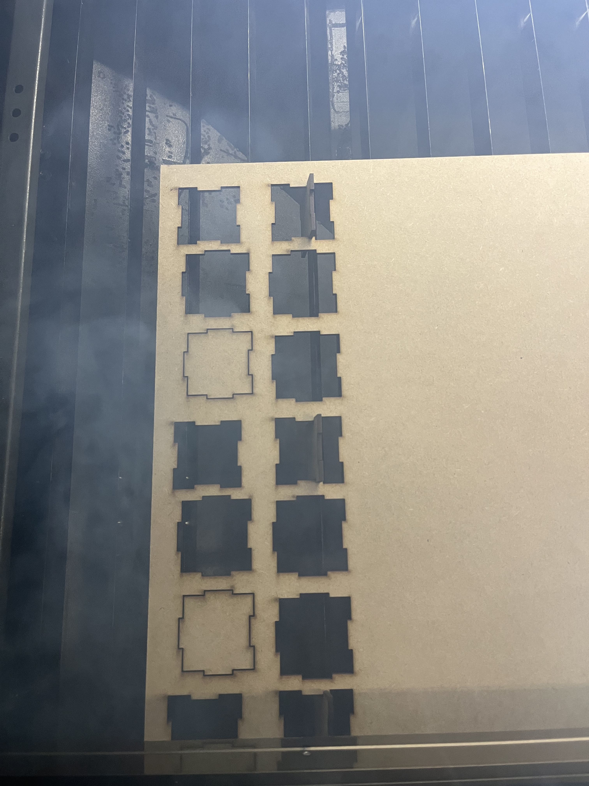
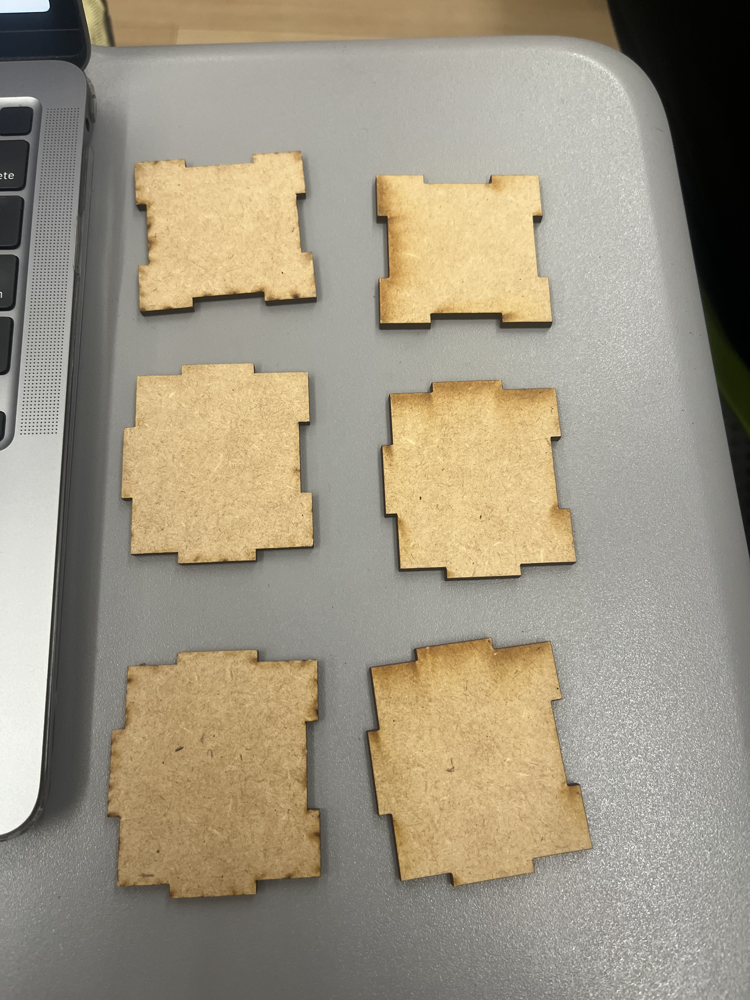
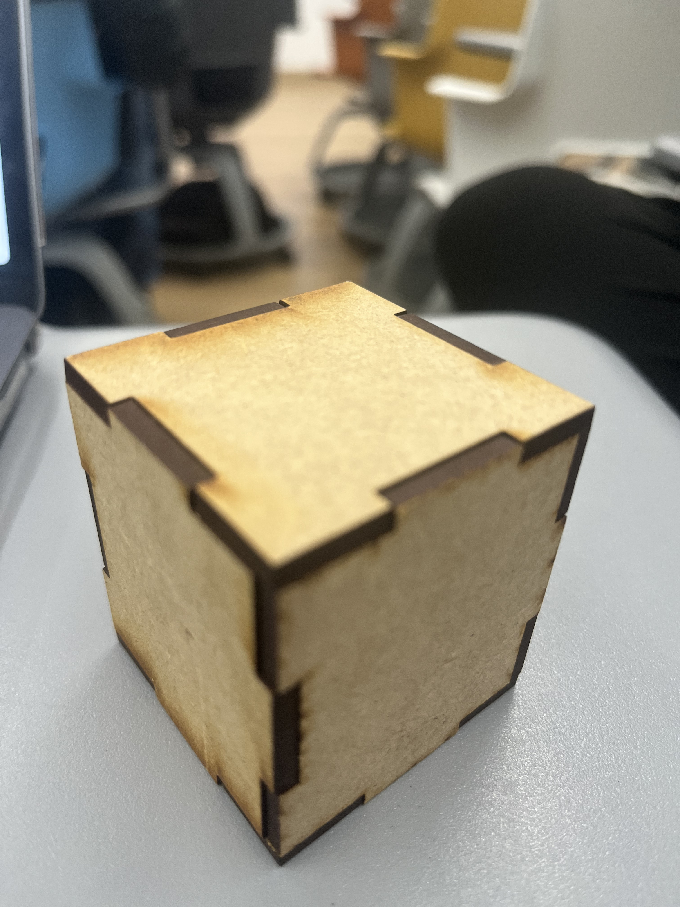

Introducción
Este proyecto consistió en diseñar las seis caras de un cubo, incluyendo ensambles, para ser cortadas con precisión en una máquina láser y ensamblarse posteriormente.
Materiales y Herramientas
- Material: Madera MDF o Triplay de 3mm
- Software de Diseño: THINKERCAD
- Hardware: Cortadora Láser CO2
Procedimiento
- 1. Diseño de Planos:Se dibujaron dos de las seis caras del cubo, ajustando las dimensiones de las lengüetas para compensar el ancho del corte del láser.
- Preparacion: Al tener listo el modelo, lo descargamos en formato en .STL y lo cortamos en el laboratorio que mencione previamente.
- Corte: Se colocó la plancha de madera y se ejecutó el corte de las dos piezas, seis veces. Mario (el laboratorista) nos ayudo durante el proceso explicandonos como usar la mauina y su software 
- Ensamblaje: Se ensamblaron las piezas manualmente para formar el cubo. 

Resultados y Conclusiones
El cubo ensambló correctamente, aunque sobro espacio, tuvimos que repetir la impresion varias veces hasta que, con el archivo de un compañero, cortamos de manera correcta.
La precisión de la cortadora láser es ideal para ensambles de ranura. La etapa crítica es el diseño paramétrico y el ajuste fino; para evitar que el cubo quede demasiado suelto o muy apretado.